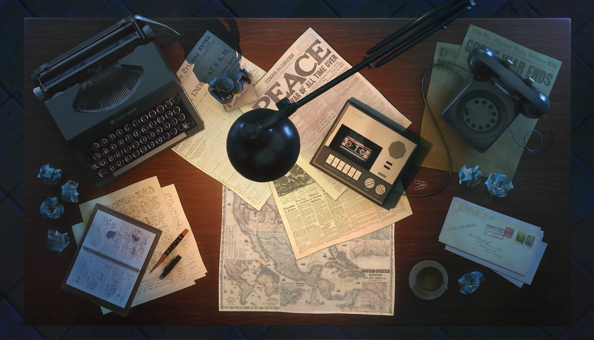

links inceridos na imagem

Fumaça e Feitiço é um projeto independente de RPG de mesa de fantasia, desenvolvido como um exercício de criação autoral. O projeto reúne a construção de um universo próprio, o desenvolvimento de regras e sistemas de jogo e a criação de materiais de referência para jogadores e mestres.
A proposta é explorar a fantasia a partir de uma perspectiva própria, combinando elementos familiares do gênero com uma identidade visual e temática particular. Mais do que um conjunto de regras, Fumaça e Feitiço é um projeto em constante desenvolvimento, aberto a revisões, experimentações e novas ideias.
Este site foi criado para reunir os materiais do RPG em um único lugar, de maneira organizada e acessível. Sua apresentação visual faz parte dessa proposta: em vez de um manual convencional, o conteúdo é apresentado como uma coleção de livros, registros e documentos pertencentes ao universo do jogo.
O projeto ainda está em andamento, e este espaço acompanhará seu desenvolvimento.
Sempre gostei de mundos de fantasia e de RPGs em geral. Jogar com meus amigos, criar campanhas, inventar universos e desenvolver nossos próprios sistemas sempre foi uma das minhas coisas favoritas. Parte da diversão estava em jogar, mas outra parte igualmente importante era descobrir como tudo funcionava: estudar classes, raças, regras, possibilidades e as particularidades de cada mundo, mas, por mais divertido que tudo isso fosse, eu sempre sentia vontade de ir um pouco além.
Desde pequeno, gosto de imaginar mundos, histórias e universos próprios. E não apenas as histórias dos personagens que vivem neles, mas também a história do próprio mundo: como ele surgiu, como funciona, quais são suas regras, seus princípios e tudo aquilo que existe por trás do que podemos ver. Acho engraçado pensar que eu já fazia isso quando era criança, brincando sozinho no meu quarto com meus brinquedos. De alguma forma, eu já estava inventando mundos inteiros para eles habitarem.
Foi dessa vontade que surgiu Fumaça e Feitiço. A ideia inicial era simples: criar, por diversão, um universo próprio, com suas regras, seu sistema e tudo aquilo que compõe um RPG de mesa. Comecei a desenvolver o projeto sozinho, registrando minhas ideias em documentos e construindo, aos poucos, cada parte desse mundo. Em algum momento, porém, tive outra ideia. Como curso Sistemas de Informação, pensei que poderia aproveitar o projeto também para colocar em prática o que estudo na faculdade. Por que não transformar todo aquele material em um site próprio?
Foi assim que o projeto ganhou uma nova dimensão. Além de continuar desenvolvendo o RPG, comecei a construir um espaço para reunir seu conteúdo, organizar o material que já havia produzido e preparar o terreno para tudo o que ainda pretendo criar. O site se tornou, ao mesmo tempo, uma ferramenta para o jogo e uma oportunidade de aprender, experimentar e desenvolver minhas habilidades, no fim das contas, Fumaça e Feitiço reúne várias coisas de que gosto: criar mundos, imaginar histórias, desenvolver sistemas e construir coisas por conta própria. O que começou como uma ideia para me divertir acabou se tornando também um projeto de aprendizado, ao qual ainda quero dedicar muito tempo.
Este site é uma parte desse processo. Ainda há muito a fazer, muitas ideias para desenvolver e muita coisa para descobrir pelo caminho. Por enquanto, fico feliz em poder finalmente reunir tudo isso em um só lugar e compartilhar um pouco do que venho construindo.
Obrigado por visitar o projeto! :3